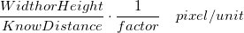

Wenn die Skalierung festgelegt ist, wird sie im Bild gespeichert und kann später in anderen Hilfsmitteln und Apps verwendet werden.
Diese Funktion bildet die Pixel eines Bildes auf die tatsächliche Größe ab,wie eine Skalierung von 10 Pixel/nm.
Sie wird typischerweise für Mikroskopbilder verwendet, die über eine Skalierung verfügen.
| Bekannte Distanz | Ändern Sie die Größe des ROI-Felds und geben Sie den Wert der Breite/Höhe ein, der die tatsächliche Distanz des ROIs darstellt. Ob sich die Distanz auf die Breite oder Höhe des ROIs bezieht, wird durch Auswahl der Option Breite\Höhe bestimmt. |
|---|---|
| Einheit der Länge | Geben Sie die Einheit der tatsächlichen Distanz ein. |
| Breite/Höhe in Pixel | Bestimmen Sie, ob die Distanz sich auf die Breite oder Höhe des ROIs bezieht. |
| Faktor |
Sie können einen Skalierungsfaktor eingeben. Die tatsächliche Skalierung wird sein:
 |
|
Wenn die Skalierung festgelegt ist, wird sie im Bild gespeichert und kann später in anderen Hilfsmitteln und Apps verwendet werden. |
Diese Funktion wird verwendet, um die Position und Größe des Bildes zu bestimmen, wenn es als Hintergrund in einem Diagrammfenster eingesetzt ist.
Sie ist besonders beim Einfügen von Karten als Layerhintergrund einer Grafik nützlich. Siehe hier ein Beispiel.
Hinweis:
|
Ändern Sie die Größe des Bildes mit Interpolation.
| Nächster Nachbar | Verwendet die Interpolationsmethode Nächster Nachbar, um die Bildgröße anzupassen. |
|---|---|
| Bilinear | Verwendet die bilineare Interpolation und Mittelung, um ein Bild von hoher Qualität zu erzeugen. Wird normalerweise verwendet, um das Bild zu vergrößern. |
| Bikubisch | Verwendet die bikubische Interpolation und Mittelung, um ein Bild von hoher Qualität zu erzeugen. Die Methode ist langsamer als Bilinear, bietet aber eine höhere Qualität. Wird normalerweise verwendet, um das Bild zu vergrößern. |
| Pixel-Flächen-Verhältnis | Verwendet das Pixel-Flächen-Verhältnis, um die Bildgröße zu ändern. Wird normalerweise verwendet, um das Bild zu verkleinern. |
| Lanczos | Verwendet die Interpolationsmethode Lanczos, um die Bildgröße anzupassen. Das angepasste Bild hat möglicherweise Werte, die außerhalb liegen. |
Schaltflächen und Menüs zum Ändern der Anzeigegröße im Bildfenster, einschließlich Zeigen der tatsächlichen Größe und eine Zoomfunktion, stehen zur Verfügung.
Hinweis: Diese Hilfsmittel ändern nicht die tatsächliche Skalierung oder Größe des Bildes.
Zwischen dem Modus der tatsächlichen Größe (1:1 Pixel) und dem Modus An Fenster anpassen wechseln
|
Per Standard wird das Bild im Modus Tatsächliche Größe geöffnet, wenn die Breite/Höhe eines Bilds kleiner als 800 ist. Sie können den Standardschwellenwert mit @IWP ändern. |
Zoomen und Schwenken
|
Die maximale Vergrößerung ist 3200 %. Das Bild wird beim Vergrößern verpixelt. |